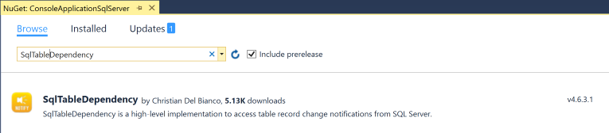

NuGet Package to monitor table change
SqlTableDependency is a high-level implementation component to monitor record table changes. It receive notifications containing modified record table values from SQL Server when the content of a specified table change.
If you want to use SQL Server notifications to audit your table change without paying attention to the underlying Service Broker infrastructure, the SqlTableDependency is your choice.
A full documentation can be found on Hit Hub site at SqlTableDependency.
Nuget package contentSqlTableDependency nuget package contains two dll:
TableDependency.dll contains abstractions and base class, as well as common funtionality. This because initially there was an implementation for Oracle too.
SqlTableDependency.dll contains concrete implementation for monitor table change on SQL Server.
InstallationYou can download and install SqlTableDependency from Visual Studio Package Manager Console using the following command:
You can also search and download SqlTableDependency from Manage Nuget Package:

System requirementsSqlTableDependency is open source C# projects built with:
Detect record table changes: Last edit on 22 July 2017 by Christian Del Bianco
More info on monitor table record changes see SqlTableDependency's GitHub project site.